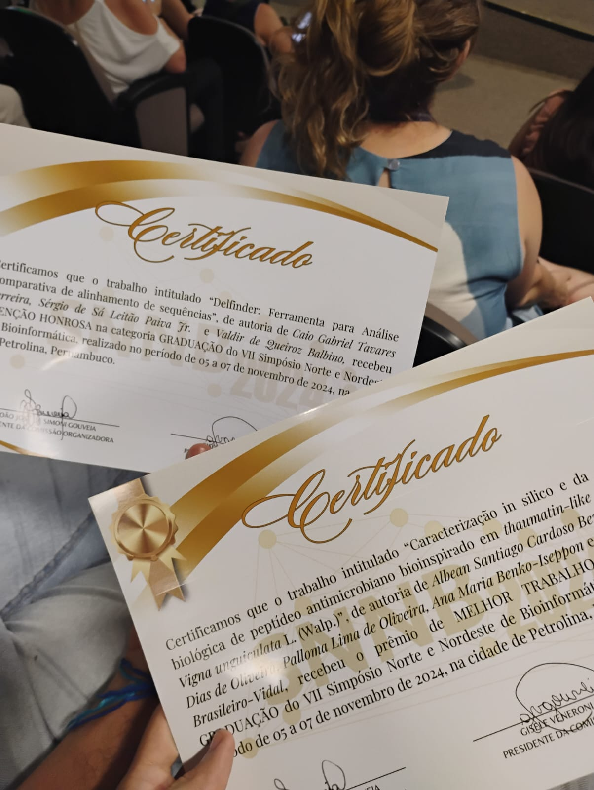
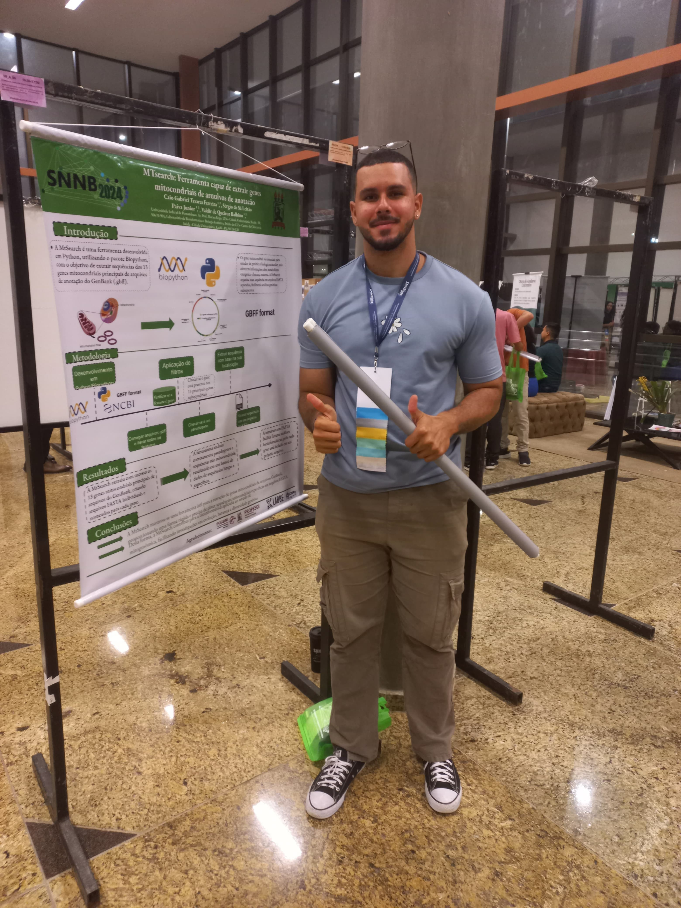

Sobre mim
Como analista de bioinformática
O meu nome é Caio Gabriel Tavares Ferreira, tenho 22 anos e sou formado no curso de Bacharelado em Ciências Biológicas pela Universidade Federal de Pernambuco. Comecei a minha jornada na bioinformática em setembro de 2022, onde participei do Congresso Brasileiro de Genética, que ocorreu em Ponta Negra - RN. Com isso, me apaixonei pela área e pelas possibilidades que poderiam ser realizadas juntando a tecnologia e a biologia. Por essa razão, comecei meus estudos aprofundados na área, desenvolvendo habilidades principalmente em Python, R e o pacote Biopython.


Projetos
Jogo Senha
O jogo da senha é um jogo de quebra de código mental ou de papel e lápis para dois ou mais jogadores. O jogo é jogado em turnos por dois oponentes que visam decifrar o código secreto do outro por tentativa e erro.
Jogo Senha (Bulls and Cows)
Senhas chutadas
Jogo da Forca
Delfinder
Uma ferramenta voltada para revolucionar a análise de dados de alinhamentos múltiplos. A Delfinder servirá para pegar mais de 20 mil dados de sequências de DNA disponíveis no NCBI. Ademais, ela irá fazer um filtro onde não serão repetidas sequências com ID, nome e sequência iguais. Depois disso, serão contabilizadas quantas espécies existem a nível de família dentro daquela análise. Após isso, será feito o alinhamento múltiplo das sequências e a partir disso a Delfinder irá identificar as variações de pelagem dos animais a partir das deleções de pares de base. Disponível em breve em todos os sites do Brasil e mundo.
Logo inicial da Delfinder e prêmio recebido pela criação da mesma no Simpósio Norte e Nordeste de Bioinformática 2024.
MTsearch
Mais uma ferramenta criada pelo cientista Caio Gabriel, a MTsearch é um programa criado totalmente em python, juntamente com o pacote Biopython que pega arquivos de anotação de genomas completos e extrai todos os 13 principais genes mitocondriais desse genoma.
Apresentação da MTsearch no Simpósio Norte e Nordeste de Bioinformática 2024.